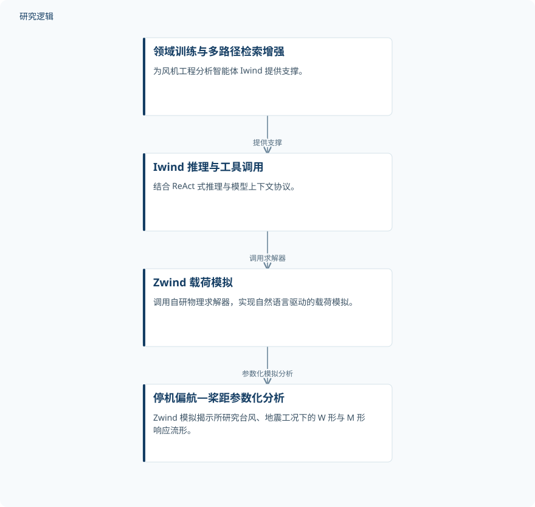

摘要解读
物理信息大语言模型智能体解析台风与地震诱发的风机失效及停机偏航—变桨对策
A physics-informed LLM agent for uncovering typhoon- and earthquake-induced turbine failures and offline yaw-pitch countermeasures.
解读更新 2026-11-15 04:39 · 依据公开摘要整理，未核验全文细节
台风和地震如何损伤风机，大语言模型又能怎样参与分析？这项研究将智能体与物理求解器连接，把自然语言驱动的载荷模拟与灾害损伤分析联系起来，为理解停机状态下的风机响应提供参考。
文章目录
从灾害损伤走向停机状态分析
极端台风和地震可能严重破坏风机结构。理解不同灾害下的失效机制，是讨论潜在减灾措施的基础。本文围绕风机工程分析构建物理信息大语言模型智能体 Iwind，关注知识任务、载荷模拟与可视化损伤检查。
这里的偏航—桨距分析面向停机状态。摘要将其结果定位为停机状态比较和危险区域识别的仿真参考，而不是已经在真实灾害中验证有效的控制措施。
让 Iwind 调用物理求解器 Zwind
Iwind 以领域专门训练和多路径检索增强生成作为支撑，结合 ReAct 式推理与模型上下文协议，调用研究团队自研的物理求解器 Zwind，实现自然语言驱动的载荷模拟。
研究还利用 Zwind 开展参数化模拟，考察所研究台风与地震工况下的停机偏航—桨距响应。需要区分的是：摘要描述了智能体与求解器的连接方式，但未展开物理信息如何融入训练或推理的具体细节。
依据摘要整理的 Iwind 方法示意


仅概括摘要明确描述的技术关系；这是依据摘要整理的示意图，不是论文原图。
下载 SVG图示关系说明
实线表示相邻阶段的信息流，虚线表示跨阶段联系或反馈。
领域训练与多路径检索增强 → Iwind 推理与工具调用：提供支撑；Iwind 推理与工具调用 → Zwind 载荷模拟：调用求解器；Zwind 载荷模拟 → 停机偏航—桨距参数化分析：参数化模拟分析
知识任务表现与两类灾害响应
在摘要报告的评估中，Iwind 在风机知识任务上优于其母模型，并支持载荷模拟执行和可视化损伤检查。摘要没有给出提升幅度，因此不能据此量化其优势或推断其他任务上的表现。
收集的案例呈现出不同损伤特征：台风载荷下出现叶片断裂、塔筒屈曲和倾覆；部分地震受损风机则在基础或下部支撑结构处表现出更明显的损伤。这些是所收集案例的观察，不宜直接推广为所有风机的失效规律。
参数化模拟进一步显示，在所研究的台风和地震工况中，停机偏航—桨距响应流形分别呈 W 形和 M 形。这些形态属于仿真发现，可为停机状态比较与危险区域识别提供参考，但不能直接等同于已验证的最优避险设置。
摘要尚不能界定的验证范围
仅凭本次摘要，无法判断损伤案例的数量、来源与代表性，也无法确定知识评估的数据构成、比较设置和评价指标。摘要未交代载荷模拟与损伤检查的验证范围，不能将这些信息缺失理解为论文没有开展相关工作。
摘要也未说明参数化分析覆盖的机型、灾害输入、参数范围及响应指标。因此，W 形与 M 形结果的适用边界，以及仿真参考能否转化为现场减灾效果，仍需进一步阅读相关方法和验证材料。
阅读启发：区分智能体能力与工程证据
阅读启发：值得继续追问的是，知识任务上的优势如何对应到可靠的求解器调用，以及停机响应的形态如何支持具体风险判断。阅读时宜分别核对语言模型评估、物理模拟验证与工程应用证据，避免把“能够执行模拟”直接理解为“已经证明减灾有效”。
以上为本站阅读启发与建议，不是论文已验证的结论。